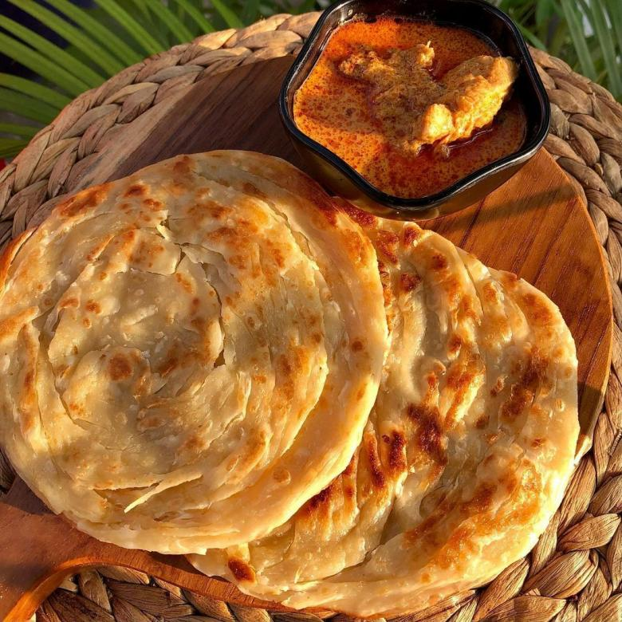
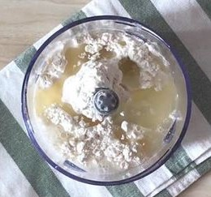
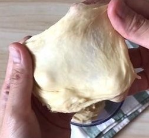
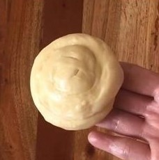

RESEP KUE MARYAM

Bahan-Bahan
- 250 gram tepung terigu
- 1 butir telur
- 3 sdm margarin, lelehkan
- 100 ml air hangat
- 2 sdm susu bubuk
- 1/2 sdt garam
- margarin leleh untuk olesan
- minyak untuk merendam
Langkah-Langkah
- campur semua bahan jadi satu

- uleni sampai kalis (aku pake tangan) jangan takut jika adonan lengket ya,
lumuri tangan sesekali dengan tepung (tp jangan tambahkan tepung) uleni terus sampai adonan kalis

- kalisnya adonan canai tidak sekalis adonan roti ya, kira2 seperti ini.
